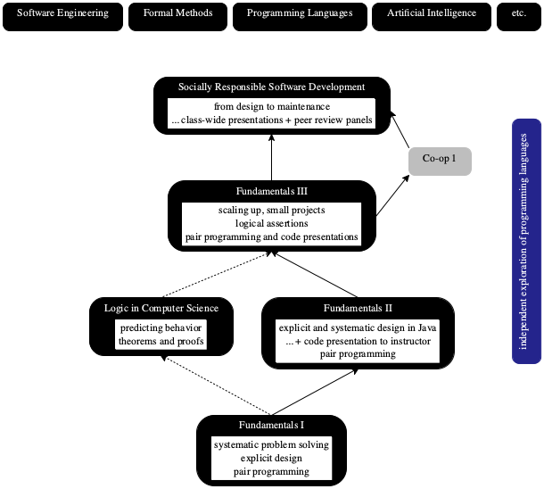

Prelude
Every undergraduate curriculum in computer science comes with at least one extremely intensive course on general programming. In this course, students typically work on a large-ish project with several deadlines, develop tons of code, and learn to collaborate with each other. Rarely, though, are the learning goals stated explicitly, plus the intense focus on programming obscures what a university course can, and should, contribute to the programming education at this stage of a student’s education.
software is a message from one developer to another across time;
the development of software must account for this messaging;
thinking is the difficult part of software development;
developers need help with properly expressing their thoughts as code;
help comes in the form of socially-responsible development habits;
and professors can coach students to develop these habits as undergraduates.

The Context
At my current institution, the course sits atop three programming courses. See
figure 1 for a diagram of the core programming curriculum. The first
course, Fundamentals I, introduces students to the idea that good
programming calls for a systematic approach, starting with a careful analysis
and description of the relevant sets of data all the way to the creation of a
unit test suite. It does not use an existing, “industrial strength”
programming language but several languages specifically designed for this
audience of novices and the systematic-programming curriculum. These teaching
languages lack a type system—
Students and graduates report that Java is the largest programming languages, but it occupies only a minority market share. Fundamentals II injects two ideas into the curriculum: type checking and explicit, object-oriented programming. The goal is to demonstrate that the principles of systematic program design from Fundamentals I apply in the context of a commercially successful language, Java. But, the programming assignment and the recurring programming project are still quite small.
Fundamentals III scales up the ideas to projects with graphical views,
complex controls, and interesting models. The course begins to emphasize the
proper design of interfaces and programming to interfaces—
Socially Responsible Software Development, short: SRSD and also known as Fundamentals IV, is the source of the material in this book. It is the last course where instructors and teaching assistants inspect the code that students deliver in depth. To make students feel comfortable, they get to pick their favorite one, because at this point in their development they have seen several and have formed an opinion. As the diagram in figure 1 indicates, students take courses from many different areas for the remaining two years: Software Engineering, Formal Methods, Programming Languages, Artificial Intelligence, etc..
Most importantly, the course is much more about the non-technical aspects of thinking-programming; it is about the social interactions that foster good thinking. While students program in pairs for some time in the first three courses, SRSD spends a large amount of time on the social aspect of programming-thinking. Students program in pairs, present their work to their peers on a regular basis, and critique each others creations extensively.
Practicing social responsibility and systematic design plus combining those ideas in one context is challenging. I have spent over two decades teaching and refining my approaches. Many of my ideas failed; this book collects the successful ones.
Developing a Mind Set
develop software in a systematic fashion, and
develop software with, and for, other developers.
Unsurprisingly the two imperatives are intertwined. Systematic software
development means a lot of hard thinking, which happens in the developer’s
mind. No software tools in even the best interactive development environments
check the thinking of a developer. They can’t. It takes another developer—
One way to instill this mindset is to expose students and practitioners to all
aspects all the time—
This Book and Its Parts
The book consists of three parts. Part I spells out the life cycle of a typical software project: the normal, premature death and the life of survivor projects. It is the later that points to the tremendous social responsibilities of developers.
Part II describes the psychology and sociology of software development. Developers are creators. Like all other artsy creators tend to identify with their creations and criticism of their creations with criticisms of their ego. Unless developers properly understand this relationship, their interactions with their social context may become contentious. Then again, some tension and some friction are natural in this context, because socially responsible developers must stand up for colleagues whom they have not met yet and may never meet.
Part III concerns technical skills. While readers of the book are expected to
have some basic grasp of programming, this book aims to make programming
systematic, for both small snippets and semester-size projects. Given
enough time, everyone can create small pieces of code—
The text points to teaching notes in the margins at many places, like the one above about what universities cannot, and should not, teach in depth. These notes explain how to manage all these ideas in a course setting, from setting up the project to dealing with in-person code reviews.
|
where do I put these ideas: |
|
-- some piecces of a project are outsourced; |
you may never meet these developers face-to-face |
|
-- what is the mental state of these developers? |
|
-- what is the mental state of programmers you work with? |
|